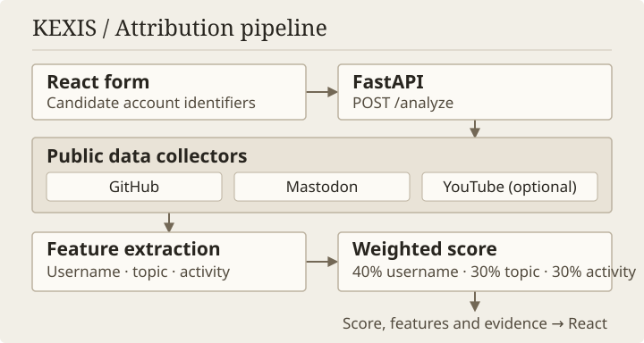
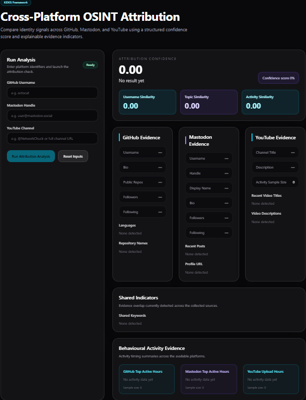

Final-year project OSINT and digital forensics
KEXIS Attribution Framework
I built a prototype for open-source intelligence (OSINT) investigations to help assess whether public accounts could share an owner. KEXIS compares usernames, vocabulary and activity patterns, then shows the evidence behind its score.
- Role
- Individual research and development
- Year
- 2026
- Stack
- Python · FastAPI · React · Vite
- Sources
- GitHub · Mastodon · YouTube

The investigative problem
Suppose two unrelated people choose the handle packet-garden. If an investigator assumes those accounts share an owner, they might attribute one person’s posts or repositories to the other. A copied bio or a shared technical interest can make that mistake easier to miss.
For my final-year cybersecurity project, I wanted to make that comparison easier to examine. I started with accounts the investigator had already identified and built a workflow that exposes which public signals agree and how much each contributes to the result.
From research to architecture
I started with a Python command-line prototype that looked up a GitHub profile, then added Mastodon for a cross-platform comparison. In the web version, a React form sends candidate identifiers to POST /analyze. The FastAPI handler in api.py calls the platform collectors, builds the comparison inputs and passes three feature values to scoring_engine/confidence_model.py.
Platform-specific collectors handle the different API response shapes. GitHub and Mastodon profiles are required to proceed. Once those profiles resolve, the comparison can still run when an activity or content fetch yields an empty sample. I added YouTube later as an optional source of text and publication times.
Collecting public evidence
- GitHub
- I used the public profile and repositories endpoints for the username, bio, repository names, descriptions and reported languages. For timing, the collector reads
created_atfrom the public events endpoint and considers up to 100 entries from a single response. - Mastodon
- The collector searches through
mastodon.social, preferring an exact account or username match before falling back to the first result. It strips HTML tags from bios and posts, requesting 10 statuses for text and 40 in a separate request for timestamps. - YouTube
- A
/channel/…URL goes directly to a channel lookup. Handles and names go through channel search. Once a channel resolves, the collector requests up to 10 recent videos for titles, descriptions and publication timestamps. A channel can resolve even when the video request yields no usable evidence.
Extracting comparable signals
- Username similarity (U)
- Python’s
SequenceMatchercompares the resolved GitHub and Mastodon usernames after lowercasing, trimming whitespace and removing hyphens and underscores. - Topic similarity (T)
- I combine GitHub’s username, bio and repository metadata into one text source. The other combines Mastodon’s username, display name, bio and posts with YouTube channel and video metadata. The code lowercases the text, splits on punctuation and whitespace, and drops stopwords and tokens shorter than three characters. Jaccard similarity divides the number of shared unique tokens by the size of the union. The response also includes the sorted shared keywords.
- Activity similarity (A)
- I compare GitHub events with the combined Mastodon and YouTube timestamps. Each side is normalised into distributions across 24 hours and seven weekdays. The overlap is the sum of the smaller proportion in each corresponding bucket. The feature gives hourly overlap 70% of the weight and weekday overlap 30%. Unparseable timestamps are skipped, and an empty side produces zero overlap.
How the score evolved
- GitHub smoke test.
C = U. The first version scored the entered username against the login returned by GitHub. - Cross-platform comparison.
C = 0.70U + 0.30T. Adding topic overlap gave vocabulary a role in the score while usernames still carried most of the weight. - Three-signal model.
C = 0.40U + 0.30T + 0.30A. I reduced the username weight and added timing as a separate signal.
FastAPI assigns the band before rounding the response to two decimal places. Scores below 0.40 are Low, scores from 0.40 up to 0.70 are Moderate, and scores at or above 0.70 are High.
These bands describe a weighted similarity score. Common ownership requires independent corroboration, and the weights and thresholds have no probability calibration.
Connecting the API to React
The request requires github_username and mastodon_handle. When I first added a required youtube_channel field, the older two-field request failed validation with HTTP 422. The revised schema defaults YouTube to None and only calls the collector when given a non-blank value.
The response separates github, mastodon and youtube evidence from features and result. The React dashboard shows the score and classification, the three feature values, shared keywords, and each platform’s sample size and most active hours. Those counts help an investigator distinguish a sparse comparison from one based on more records.

What the prototype tests showed
The March figures come from my development notes. The May figures come from a saved API response and dashboard captures.
- 11 March 2026 · GitHub smoke tests · 1.00
- Two GitHub lookups returned a username similarity and overall score of
1.00. This exercised the lookup and normalisation path against the returned login. - 11 March 2026 · Two-signal comparison · 0.54
- Comparing GitHub’s
Kexghwith Mastodon’sxghreturnedU = 0.75andT = 0.05, withcyberamong the shared keywords. The 70/30 model returned0.54(Moderate). - May 2026 · Three-signal API run · 0.34
- The recorded response showed
U = 0.75,T = 0.12andA = 0.00. The 40/30/30 model returned0.34(Low likelihood). The capture contains three GitHub timestamps, one Mastodon timestamp and YouTube channel metadata with empty video lists and zero timestamps. The activity score reflects GitHub’s overlap with the pooled Mastodon and YouTube sample.
See the captured 0.34 API response excerpt
{
"github": {"activity_sample_size": 3},
"mastodon": {"activity_sample_size": 1},
"youtube": {
"video_titles": [],
"video_descriptions": [],
"activity_sample_size": 0
},
"features": {
"username_similarity": 0.75,
"topic_similarity": 0.12,
"activity_similarity": 0.0,
"shared_keywords": [
"cyber", "digital", "forensics", "security"
]
},
"result": {
"confidence_score": 0.34,
"classification": "Low likelihood"
}
}| GitHub / Mastodon | Score | Band |
|---|---|---|
| kexgh / kexgh | 0.74 | High |
| kexgh / xgh | 0.50 | Moderate |
| kexv2 / xgh | 0.28 | Low |
| geerlingguy / geerlingguy | 0.57 | Moderate |
All Mastodon handles in the captures used mastodon.social. The first three runs also included the same test YouTube channel, and the fourth used Jeff Geerling’s public channel. The two exact username matches reached different bands because the other features differed. Estimating attribution accuracy would require labelled account pairs and a consistent evaluation across versions.
Limitations and lessons
Resolving the intended account is part of the evidence problem. Mastodon and YouTube search fallbacks can select an unintended account. Matching handles can collide or be copied, and exact-token overlap misses synonyms while rewarding vocabulary common to a whole community. Usernames also feed the topic comparison, so the signals can overlap.
Public events, statuses and uploads are different kinds of activity. Small or uneven samples, scheduling and time zones can change the overlap. The implementation reads the hour and weekday directly from each parsed timestamp, so differing offsets can put simultaneous events in different buckets. Some fallback text also enters the topic token sets, and unavailable timing evidence can contribute zero under the fixed weights.
The project taught me to show the evidence that produced a score and the gaps in that evidence together. A reviewer needs both to decide how much weight the comparison deserves.